简体中文
简体中文


- 樹状細胞はノーベル賞受賞している
最先端のがん治療 - 末梢血液での治療が可能
（アフェレーシス（成分採血）が不要） - HLA検査（白血球の型を調べる検査）
不要で誰でも治療が可能
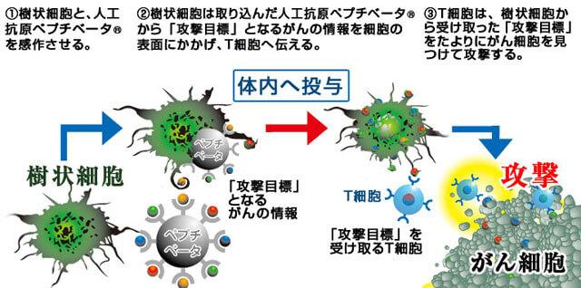
樹状細胞とは
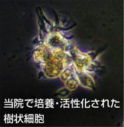
樹状細胞（Dendritic Cell）とは抗原提示細胞として機能する免疫細胞の一種です。
1973年にRalph Marvin Steinman博士らによって存在が報告された細胞で、周囲に突起を伸ばしている様子が樹木の枝が伸びている状態にそっくりなことから樹状細胞と名付けられました。
この樹状細胞はがん細胞を直接攻撃するのではなく、T細胞にがん情報を与え攻撃の指令を出す免疫細胞です。
Ralph Marvin Steinman博士は2011年に樹状細胞療法の研究でノーベル医学・生理学賞を受賞しています。
樹状細胞に関する研究は米国ハーバード大学や、日本国内でも東京大学など、世界中で期待されている免疫細胞療法です。
樹状細胞はがんの情報となるたんぱく質「抗原」を取り込み、細胞内で分解して記憶し、T細胞に伝えやすい状態にします。この抗原をT細胞へ伝える事で、T細胞は活性化されがん細胞を攻撃します。
この一連の仕組みを用いた治療が樹状細胞ワクチン療法となります。
樹状細胞は司令塔の役割をする細胞なのです。
この治療に重要なのが「抗原」と言われるものです。
この抗原が樹状細胞に獲得され、T細胞に伝わらなければ目標のがんを攻撃する事が出来ない為、「抗原」がこの治療に置いての「攻撃目標」となるのです。
新技術人工抗原とは
樹状細胞ワクチン治療には、がんの「攻撃目標」となる抗原が必要不可欠なのですが、当院の新樹状細胞ワクチン療法で使用する抗原は最新の技術が組み込まれた新技術人工抗原を使用します。
新技術人工抗原「PepTivator（ペプチベータ）®」
従来、樹状細胞ワクチン療法で使用される抗原は、治療を行う前にHLA検査（白血球の型を調べる検査）を行い、患者さんと同じ型であるかどうかを調べて患者さんに適した抗原を使用するという方法が主流でした。
しかし、この白血球の型にはたくさんの種類が存在している為、事実、抗原を用いた樹状細胞ワクチン療法を提供する事は不可能でした。
しかし、当院が使用する人工抗原ペプチベータ（正式にはMACS®GMP PepTivator®）では複数のタイプ（白血球の型）の抗原を混ぜ合わせている為、どの患者さんに対しても樹状細胞ワクチン療法を提供する事が可能になりました。
従来の人工抗原「ペプチド」
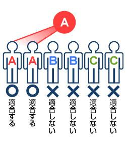
従来の人工抗原ペプチドは、白血球の型が適合しなければ治療する事が不可能
新技術人工抗原「ペプチベータ」
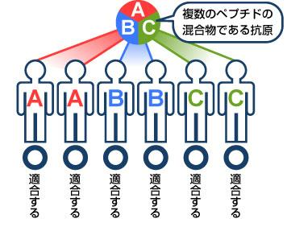
ペプチベータ®は白血球の全配列に対応している為、どのような白血球の型の患者さんでも治療する事が可能
抗原の種類
当院では二種類の抗原を用いた新樹状細胞ワクチン療法を提供しております。
「MACS®GMP PepTivator®WT1」と「MACS®GMP PepTivator®MUC1」という二つの抗原を患者さんの症状に応じて使用します。
ニ種類の抗原を使用する事で様々ながん種に対しての適用の幅が広がりました。
「WT1」も「MUC1」も両方ともがん抗原の種類を表します。
2009年に米国立衛生研究所(NIH)が、沢山存在するがん抗原にランキングを付けました。
その上位二つが「WT1」と「MUC1」です。
「WT1」はウィルムス腫瘍遺伝子の事で、2010年に大阪大学大学院の杉山治夫教授らによって、白血病を含むほとんどのがんに発現するがん抗原である事が報告されています。
「MUC1」は上皮細胞などから分泌される粘液「ムチン」の主要な成分のひとつです。
主に、肺、乳房、卵巣、すい臓などの組織を覆っている為、肺がん、乳がん、卵巣がん、すい臓がんに多く見られるがん抗原で、「MUC1」の発現レベルは「WT1」以上とも言われます。
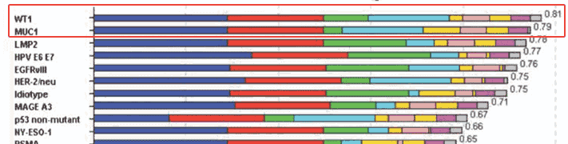
Clin cancer Res 2009;15(17) September 1, 2009
当院学術研究責任者がドイツミルテニーバイオテク社を訪問
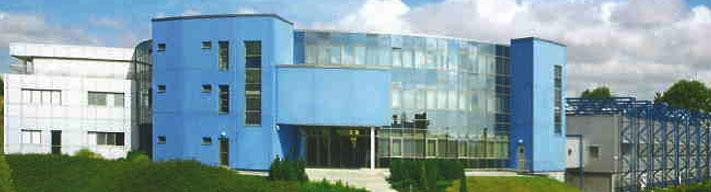
この度、ドイツミルテニーバイオテク社の新技術の抗原MACS®GMP PepTivator®を使用し、当院で開発した新技術の培養法を用いた新樹状細胞ワクチン治療を開始いたしました。
MACS®GMP PepTivator®を国内に導入するにあたり、当院学術研究責任者が、ドイツ本社を訪問し、研究開発陣およびハーマン博士と意見交換を行いました。
ハーマン博士と当院の神戸正臣博士
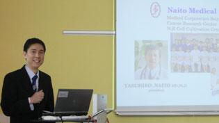
プレゼンテーション風景
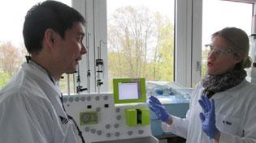
機器を使用した樹状細胞培養の打ち合わせ
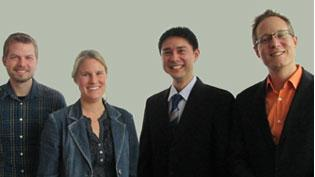
ミルテニーバイオテク本社研究陣
新樹状細胞ワクチン療法の特徴
- ほとんどのがんに適用が可能（血液がんの一部を除く）
- 基本的に副作用は少なく、高齢の患者さんにも最適（まれに軽度の熱が出ることもあります）
- 他のがん治療（免疫細胞療法も含む）と併用可能（三大治療との併用も可能で、抗がん剤治療による副作用の改善にもつながる）
- 通院による治療
（入院の必要はない） - アフェレーシス（成分採血）が不要
従来、樹状細胞ワクチン療法にはアフェレーシスという装置で2～3時間かけて血液から単球を取り出して培養する方法が主流でした。
しかし、この方法では体力の落ちている患者さんは勿論、健康な方にも体力的な負担がかかり苦痛を強いられました。
そこで、当院の新樹状細胞ワクチン療法ではアフェレーシスを不要とした末梢血からの採血で樹状細胞を培養できる方法を確立しました。
これにより患者さんへの体力的な負担を大きく軽減する事が可能となりました。
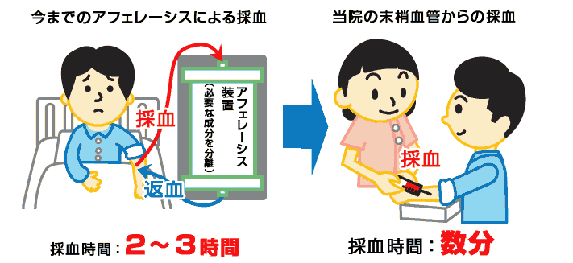
新樹状細胞ワクチン療法の概要
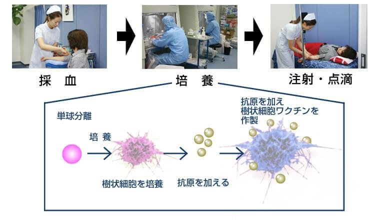
当院では1回分ごとに採血を行います。
約2週間、培養センターにて樹状細胞の培養を行います。
患者さんから頂いた血液から樹状細胞となる単球を取り出して培養を行います。
攻撃目標となる抗原を加えながら樹状細胞へと成長させ、完成した樹状細胞ワクチンを体内へ皮内注射します。
当院の新樹状細胞ワクチン療法では一部のがん（白血病など）を除き活性Ｔ細胞療法を併用していきます。
樹状細胞は免疫細胞の司令塔の役割をする細胞で、がんを直接攻撃することができません。
そこで、樹状細胞を作製する際に患者さんから頂いた血液からT細胞を培養して活性T細胞療法の点滴を同時に行います。
（詳しくは活性T細胞療法をご覧ください。）
新樹状細胞ワクチン療法の併用
樹状細胞にはNK細胞を刺激して活性化させる働きがあるため活性NK細胞療法との併用もすすめています。
こうする事によって免疫のバランスを整えたり、より多くのがん細胞を攻撃できるなど相乗効果が期待できます。
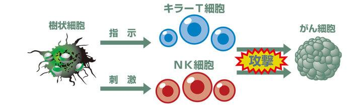
新樹状細胞ワクチン療法の副作用
個人差はありますが、稀に発熱することがあります。
1回目の投与で出なくても何度目かの投与で出る場合もあります。
ワクチンは同じ個所へ皮内注射する性質上、皮膚が固くなり、しこりとなる場合もございます。
赤く腫れたり、かゆみを伴う場合もあります。